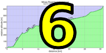

|
 |
 |

|
| Frank Paysen leaves it all on the road at the top of Haskins (Bill Bushnell) |
Check back later for links to ride photos!
Another GPS week and that meant... rain! Intermittent showers cause some Low-Keyers today to become a bit moist, but there was still a solid rider turnout on Pescadero loop, a course Low-Key has wanted to do for a long, long time. So thanks, everyone, who came out and made this climb still yet another 2016 Low-Key success story!!!
Rumors that Bill Bushnell's e-bike shorted out and exploded in a spectacular fireball descending Haskins Hill in the wet are as yet uncomfirmed. However, in any case Bill is clearly fine.
Note, if you uploaded a ride early Saturday and are not listed here, please try again, as the data repository had not yet been properly configured at that time.
KOM special mention qualifiers indicated with orange background.
| pl | # | name | team | cat | time | mph | fph | score |
|---|---|---|---|---|---|---|---|---|
| 1 | 239 | Katie Quinn | Easy Riders | 30- | 24:17.07 | 11.98 | 3583 | 132.95 |
| 2 | 23 | Shaena Berlin | Easy Riders | 2 | 26:16.98 | 11.07 | 3310 | 121.83 |
| 3 | 8 | Janet Gardner | Sr's & Mr's of No Mercy | 45+ | 27:02.46 | 10.76 | 3217 | 118.06 |
| 4 | 508 | Eleanor Wiseman | Easy Riders | 28:37.36 | 10.17 | 3040 | 110.88 | |
| 5 | 226 | Anna Janas | Stanford Cycling | Katie's Domestique ;) | 31:26.30 | 9.26 | 2767 | 99.96 |
| 6 | 504 | Roya Mirhosseini | First timer | 4 | 37:38.55 | 7.73 | 2311 | 81.93 |
100 point reference time for division Women = 31:25.66
| pl | # | name | team | cat | time | mph | fph | score |
|---|---|---|---|---|---|---|---|---|
| 1 | 37 | David Collet | Easy Riders | 45+ | 20:36.44 | 14.12 | 4222 | 129.57 |
| 2 | 63 | Christopher Evans | Easy Riders | 1 | 20:39.19 | 14.09 | 4212 | 129.25 |
| 3 | 133 | Kirk Scheibelhut | Easy Riders | 25+ | 21:23.36 | 13.60 | 4067 | 124.34 |
| 4 | 90 | Bill Laddish | Team CVC | 45+ | 21:29.33 | 13.54 | 4049 | 123.71 |
| 5 | 237 | Stefano Profumo | Lange Twins | 35+ Cat 1 | 21:36.39 | 13.47 | 4027 | 122.96 |
| 6 | 207 | Paul Castonguay | Team DNA | 50+ | 22:07.69 | 13.15 | 3932 | 119.77 |
| 7 | 33 | Dave Cherne | San Jose Bike Club | 50+ | 22:32.86 | 12.91 | 3858 | 117.31 |
| 8 | 56 | Robert Easley | Sr's & Mr's of No Mercy | 50+ | 22:34.20 | 12.89 | 3855 | 117.18 |
| 9 | 28 | Michael Busha | Diablo | 35+ | 23:13.17 | 12.53 | 3747 | 113.56 |
| 10 | 503 | Ryan Jones | Team CVC | 2 | 23:17.04 | 12.50 | 3736 | 113.22 |
| 11 | 307 | Martin Schubert | Tired | 23:41.45 | 12.28 | 3672 | 111.07 | |
| 12 | 411 | Bruce Pauly | Sr's & Mr's of No Mercy | 55+ | 24:02.49 | 12.10 | 3619 | 109.28 |
| 13 | 136 | Brian Schuster | Easy Riders | 2 | 24:25.98 | 11.91 | 3561 | 107.35 |
| 14 | 243 | Shai Simchi | Diablo | 40+ | 24:28.65 | 11.89 | 3554 | 107.14 |
| 15 | 505 | Lucas Pereira | 35+ | 24:39.30 | 11.80 | 3529 | 106.28 | |
| 16 | 68 | Joseph Fong | Team CVC | 4 | 24:54.41 | 11.68 | 3493 | 105.10 |
| 17 | 20 | Bruno Acklin | Clagnuts | 55+ | 25:32.86 | 11.39 | 3405 | 102.19 |
| 18 | 103 | Dave Miller | Stanford Cycling | Elite 4 | 25:44.74 | 11.30 | 3379 | 101.32 |
| 19 | 73 | Bruce Gardner | Sr's & Mr's of No Mercy | 45+ | 26:00.80 | 11.19 | 3344 | 100.17 |
| 20 | 235 | Frank Paysen | Diablo | 55+ | 26:15.99 | 11.08 | 3312 | 99.11 |
| 21 | 45 | Andrew Crews | Diablo | 45+ | 26:31.34 | 10.97 | 3280 | 98.05 |
| 22 | 248 | Shai Traister | easy going | 40+ | 26:34.21 | 10.95 | 3274 | 97.86 |
| 23 | 140 | Dai Sieh | Clagnuts | Second Wind | 26:42.24 | 10.90 | 3258 | 97.31 |
| 24 | 97 | Paul McKenzie | Sr's & Mr's of No Mercy | 60+ | 26:59.36 | 10.78 | 3223 | 96.18 |
| 25 | 501 | Paul Chuck | Sr's & Mr's of No Mercy | Tandem | 27:12.65 | 10.69 | 3197 | 95.31 |
| 26 | 119 | Ramon Periquet | Team CVC | Getting Old Guy | 27:47.48 | 10.47 | 3130 | 93.12 |
| 27 | 21 | Nigel Allen | Oso | 40+ | 28:15.58 | 10.30 | 3079 | 91.41 |
| 28 | 18 | Giles Douglas | 3 | 29:49.75 | 9.76 | 2917 | 86.12 | |
| 29 | 500 | Dan Brehmer | San Jose Bike Club | 50+ | 29:51.14 | 9.75 | 2914 | 86.04 |
| 30 | 129 | Adem Rudin | Race to Space | Make It To All The Tops | 30:30.00 | 9.54 | 2852 | 84.03 |
| 31 | 507 | David Towey | Race to Space | Type 1.5 Fun | 31:27.33 | 9.25 | 2766 | 81.21 |
| 32 | 506 | Ray Smith | Team CVC | Route Guide | 36:57.01 | 7.88 | 2355 | 67.98 |
| 33 | 502 | Richard Contreras | rhus | Wet | 42:34.34 | 6.84 | 2044 | 58.14 |
100 point reference time for division Men = 26:03.21
| pl | # | name | team | cat | time | mph | fph | score |
|---|---|---|---|---|---|---|---|---|
| 1 | 6 | Bill Bushnell | Low-Key | 14:23.72 | 20.21 | 6044 | 105.72 |
100 point reference time for division Hybrid Electric = 15:08.32
| pl | team | score | riders |
|---|---|---|---|
| 1 | Easy Riders | 391.76 | Eleanor Wiseman, Katie Quinn, Shaena Berlin, Brian Schuster, Christopher Evans, David Collet, Kirk Scheibelhut |
| 2 | Sr's & Mr's of No Mercy | 344.53 | Janet Gardner, Bruce Gardner, Bruce Pauly, Robert Easley, Paul Chuck, Paul McKenzie |
| 3 | Team CVC | 342.02 | Bill Laddish, Joseph Fong, Ramon Periquet, Ray Smith, Ryan Jones |
| 4 | Diablo | 319.81 | Andrew Crews, Frank Paysen, Michael Busha, Shai Simchi |
| 5 | 303.47 | Giles Douglas, Lucas Pereira, Martin Schubert | |
| 6 | San Jose Bike Club | 203.35 | Dan Brehmer, Dave Cherne |
| 7 | Stanford Cycling | 201.28 | Anna Janas, Dave Miller |
| 8 | Clagnuts | 199.50 | Bruno Acklin, Dai Sieh |
| 9 | Race to Space | 165.24 | Adem Rudin, David Towey |
| 10 | Lange Twins | 122.96 | Stefano Profumo |
| 11 | Team DNA | 119.77 | Paul Castonguay |
| 12 | Low-Key | 105.72 | Bill Bushnell |
| 13 | easy going | 97.86 | Shai Traister |
| 14 | Oso | 91.41 | Nigel Allen |
| 15 | First timer | 81.93 | Roya Mirhosseini |
| 16 | rhus | 58.14 | Richard Contreras |